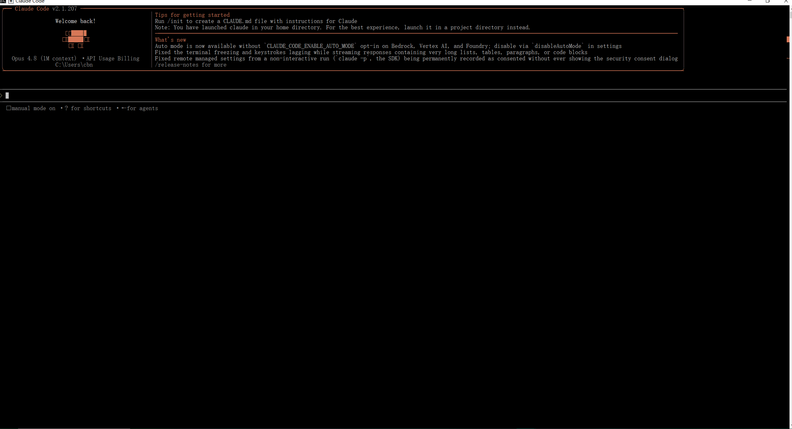
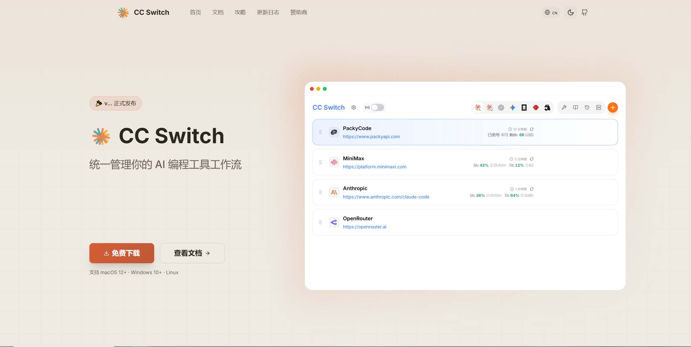

Resources · 旧站存档
资料还在。
旧站的资源页、数学课件和 Python 教程都保留在站点里；这里把它们重新放在一个入口下，并保留原来的地址跳转。
Claude Code 安装教程
旧站资源页的第一篇。安装命令如下：
npm i -g @anthropic-ai/claude-code@latest配置与安装截图（旧站原图）：

旧站还提供了 CC-Switch 的 Windows / macOS / Linux 安装包入口，原下载文件当前不在服务器上，建议从官方页面获取：

Claude Code 基础指令详解
旧站整理过的常用指令速查，保留在这里：
/help显示所有可用命令的帮助信息。/init在项目中初始化 CLAUDE.md 配置文件，扫描项目结构并生成规范说明。/add把文件加入上下文，支持通配符，例如 /add src/**/*.ts。/drop从上下文中移除指定文件，释放空间。/review审查当前 diff，找出 bug、性能问题和代码异味；/review --fix 可自动修复。/fix尝试自动修复代码中的问题。/plan进入计划模式，先探索代码库、设计方案，再开始写代码。/ls列出当前上下文中所有已添加文件及状态。/search在项目中搜索代码，支持正则，例如 /search function getUser。/compress压缩当前对话上下文，释放 token 空间。/clear清空当前会话，开始新对话。/doctor检查 Claude Code 环境与配置。数学课件
旧站的数学课件入口仍然可用，包含导数、手写识别与练习题等内容：
Python 教程
旧站的 Python 教程共 28 章，仍在原路径：